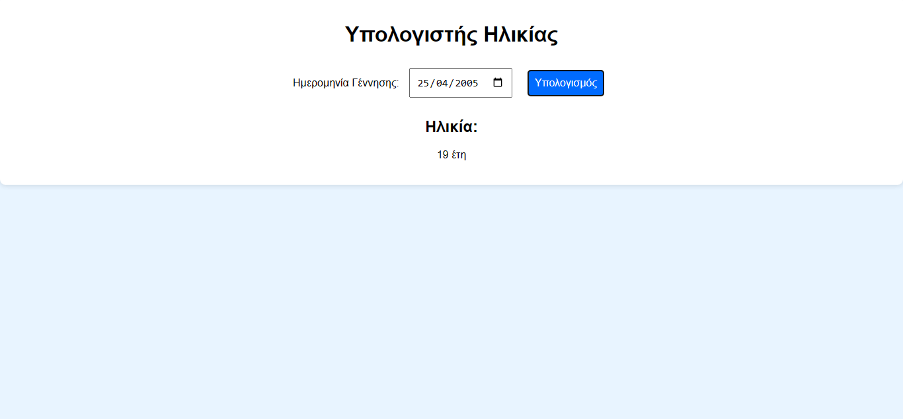
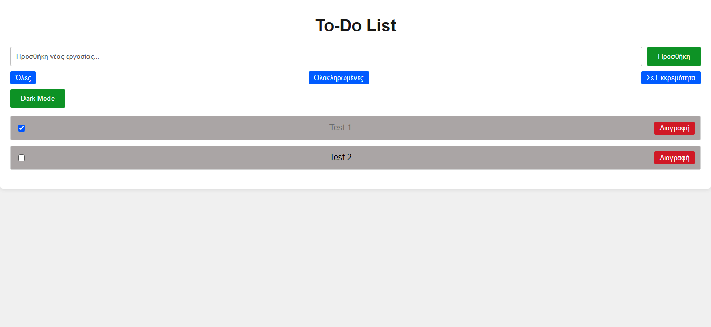

Εργασίες
Παρουσίαση σημαντικών εργασιών και projects που ολοκλήρωσα κατά τη διάρκεια των σπουδών μου.
Υπολογιστής Ηλικίας
Περιγραφή: Μια εφαρμογή που υπολογίζει την ηλικία ενός χρήστη με βάση την ημερομηνία γέννησής του.
Τεχνολογίες: HTML, CSS, JavaScript
Χαρακτηριστικά: Είσοδος ημερομηνίας, υπολογισμός και εμφάνιση ηλικίας σε έτη.
Σύνδεσμος/Link: Δείτε το project / View the project
Λίστα Εκκρεμοτήτων
Περιγραφή: Μια διαδραστική εφαρμογή που επιτρέπει στους χρήστες να προσθέτουν, να αφερούν
και να διαχειρίζονται τις καθημερινές τους εκκρεμότητες.
Τεχνολογίες: HTML, CSS, JavaScript
Χαρακτηριστικά: Προσθήκη και διαγραφή στοιχείων λίστας, σημάδεμα ως ολοκληρωμένα.
Σύνδεσμος/Link: Δείτε το project / View the project
Κομπιουτεράκι σε C++
Περιγραφή: Ένα απλό κομπιουτεράκι γραμμένο σε C++, που υποστηρίζει βασικές αριθμητικές πράξεις όπως πρόσθεση, αφαίρεση, πολλαπλασιασμό και διαίρεση.
Τεχνολογίες: C++
Χαρακτηριστικά: Διασύνδεση χρήστη μέσω γραμμής εντολών, απλές αριθμητικές πράξεις, έλεγχος ορθότητας εισόδου.
Σημείωση: Το project δεν είναι ακόμη διαθέσιμο για δημόσια πρόσβαση. Επικοινωνήστε μαζί μου για περισσότερες πληροφορίες.